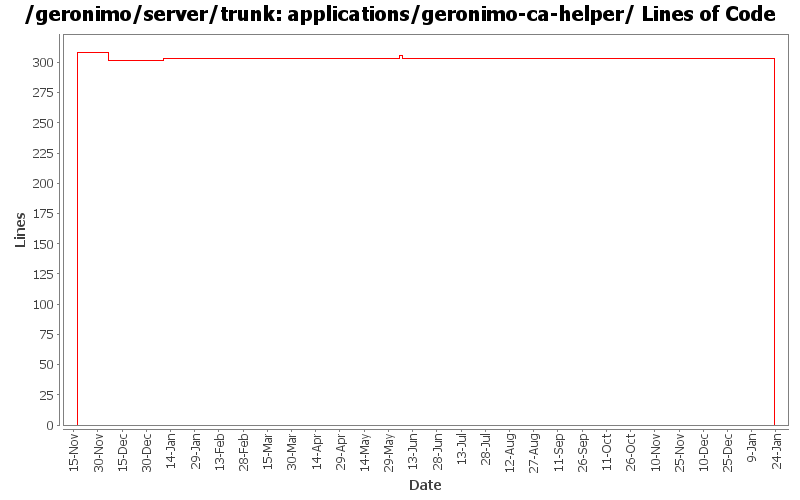

[root]/applications/geronimo-ca-helper
 src
(0 files, 0 lines)
src
(0 files, 0 lines)
 main
(0 files, 0 lines)
main
(0 files, 0 lines)
 java
(0 files, 0 lines)
java
(0 files, 0 lines)
 org
(0 files, 0 lines)
org
(0 files, 0 lines)
 apache
(0 files, 0 lines)
apache
(0 files, 0 lines)
 geronimo
(0 files, 0 lines)
geronimo
(0 files, 0 lines)
 ca
(0 files, 0 lines)
ca
(0 files, 0 lines)
 helper
(0 files, 0 lines)
helper
(0 files, 0 lines)
 util
(0 files, 0 lines)
util
(0 files, 0 lines)
 webapp
(0 files, 0 lines)
webapp
(0 files, 0 lines)
 WEB-INF
(0 files, 0 lines)
WEB-INF
(0 files, 0 lines)
 site
(0 files, 0 lines)
site
(0 files, 0 lines)

| Author | Changes | Lines of Code | Lines per Change |
|---|---|---|---|
| Totals | 24 (100.0%) | 626 (100.0%) | 26.0 |
| vamsic007 | 7 (29.2%) | 608 (97.1%) | 86.8 |
| jdillon | 9 (37.5%) | 9 (1.4%) | 1.0 |
| pmcmahan | 2 (8.3%) | 3 (0.5%) | 1.5 |
| kevan | 2 (8.3%) | 3 (0.5%) | 1.5 |
| prasad | 1 (4.2%) | 1 (0.2%) | 1.0 |
| hogstrom | 1 (4.2%) | 1 (0.2%) | 1.0 |
| dain | 1 (4.2%) | 1 (0.2%) | 1.0 |
| dwoods | 1 (4.2%) | 0 (0.0%) | 0.0 |
(GERONIMO-3747) Moved applications/* to plugins/*
0 lines of code changed in 3 files:
* updated copyright date to 2007
1 lines of code changed in 1 file:
Changed trunk to 2.1-SNAPSHOT
1 lines of code changed in 1 file:
GERONIMO-3209 Removing updates as it seems the jspc-maven-plugin-2.0-20070603.144720-1.jar creates invalid web.xml files on Windows, but works correctly on Linux with or w/o the <configuration> and fragment comments. Verified changes on WinXP and SLED10 by accessing the Admin Console and deploying the servlet-examples.
0 lines of code changed in 1 file:
GERONIMO-3209 jspc maven plugin fails in some environments when the injectString is not explicitly declared
3 lines of code changed in 1 file:
(GERONIMO-3205) Use the new jspc-maven-plugin which allows us to use our local jasper bits
2 lines of code changed in 1 file:
GERONIMO-3205 Use our temporary jsp compiler maven plugin
2 lines of code changed in 1 file:
Std props
3 lines of code changed in 3 files:
(GERONIMO-2684) Updating to use latest released spec versions; Patch submitted by Donald Woods, thanks :-)
2 lines of code changed in 1 file:
Use ${version} instead of ${pom.version} or ${geronimoVersion} for deps
Fixed some deps to use the DM config for their version, created missing DM for el spec
Drop duplicate annotation in DM
Using geronimo-jta_1.1_spec everywhere geronimo-jta_1.0.1B_spec was used before
Few comments on future version fixes that need to be made
Dropped some obvious copy-paste of pom scm and build elements which are uneeded
2 lines of code changed in 1 file:
geronimo-jsp_2.0_spec jar is being packaged in WEB-INF\lib directory in ca-helper, welcome and uddi-server web applications. Packaging of this jar is overcome by adding <scope>provided</scope> to geronimo-jsp_2.0_spec dependency.
1 lines of code changed in 1 file:
GERONIMO-2628 - upgrade to tomcat 6.0.2 beta
changes:
* modules/geronimo-tomcat
** add repository http://people.apache.org/~pmcmahan/maven2/ to pom
*** this will be removed when tomcat publishes v6 artifacts
** update pom to use tomcat 6.0.2 beta jars
** remove outdated clustering (o.a.g.tomcat.cluster)
** update resources in src/main/resources/META-INF/geronimo-tomcat/var/catalina
** update dependencies in src/main/resources/META-INF/geronimo-dependency.xml
** update test cases
** disabled a test case that fails intermittently
* modules/geronimo-tomcat-builder
** remove outdated references to clustering support
** update test cases
* configs/tomcat
** add repository http://people.apache.org/~pmcmahan/maven2/ to pom
*** this will be removed when tomcat publishes v6 artifacts
* configs/webconsole-tomcat
** remove dependencies on jasper-runtime from pom.xml and plan.xml
* configs/jee5-specs
** use servlet 2.5, jsp 2.1, el 1.0, annotation 1.0
* configs/tomcat-deployer
** update pom.xml to use new web25-builder
* assemblies/geronimo-tomcat-j2ee
** rename to geronimo-tomcat-jee
* test cases
** add new unit test for servlet 2.5 to geronimo-tomcat
* remove unnecessary reference to jasper-runtime from poms using jspc-maven-plugin
** console
** demo
** ca-helper
** jsp-examples
** ldap-demo
** remote-deploy
** uddi-server
** welcome
** magic GBall
0 lines of code changed in 1 file:
GERONIMO-2537 Merge from branches/1.2 onto trunk. I have not reviewed trunk license info. So, it's possible that there are already some deltas which should be reflected in license/notice files. This change updates the general LICENSE.txt and NOTICE.txt files. Note that I've expanded the notice/license files in the root of a source distribution. Also added required copyright to NOTICE.txt files. Note that minimal distributions have an overly broad license/notice files. Also, we have multiple copies of the same general license/notice files. Would be good to reduce these.
1 lines of code changed in 1 file:
Changed version to 2.0-SNAPSHOT
1 lines of code changed in 1 file:
modified svn properties
308 lines of code changed in 3 files:
GERONIMO-2413 Add a Certification Authority (CA) portlet to Geronimo console
299 lines of code changed in 3 files: